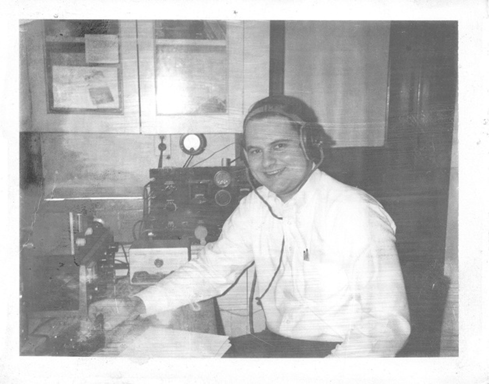

<!-- MHonArc v2.6.19+ -->
<!--X-Subject: Re: [NCDXC Chat] Rig regrets? -->
<!--X-From-R13: "Egrir Xbarf" &#60;a6fwNrneguyvax.arg> -->
<!--X-Date: Mon, 02 Feb 2026 14:16:07 &#45;0600 -->
<!--X-Message-Id: 003401dc9480$a26decb0$e749c610$@earthlink.net -->
<!--X-Content-Type: multipart/related -->
<!--X-Reference: 56d23cc5&#45;ab34&#45;8fc9&#45;2a60&#45;202f3358a604@earthlink.net -->
<!--X-Reference: C5F5253C&#45;4DE2&#45;4FD9&#45;9B24&#45;CFE92A9B7854@gmail.com -->
<!--X-Derived: jpgLVRFK1nHvk.jpg -->
<!--X-Head-End-->
<!DOCTYPE HTML PUBLIC "-//W3C//DTD HTML 4.01 Transitional//EN"
        "http://www.w3.org/TR/html4/loose.dtd">
<html>
<head>
<title>Re: [NCDXC Chat] Rig regrets?</title>
<link rev="made" href="mailto:n6sj@earthlink.net">
</head>
<body>
<!--X-Body-Begin-->
<!--X-User-Header-->
<!--X-User-Header-End-->
<!--X-TopPNI-->
<hr>
[<a href="msg41886.html">Date Prev</a>][<a href="msg41888.html">Date Next</a>][<a href="msg41886.html">Thread Prev</a>][<a href="msg41890.html">Thread Next</a>][<a href="maillist.html#41887">Date Index</a>][<a href="threads.html#41887">Thread Index</a>]
<!--X-TopPNI-End-->
<!--X-MsgBody-->
<!--X-Subject-Header-Begin-->
<h1>Re: [NCDXC Chat] Rig regrets?</h1>
<hr>
<!--X-Subject-Header-End-->
<!--X-Head-of-Message-->
<ul>
<li><em>To</em>: &quot;'Mike Flowers'&quot; &lt;<a href="mailto:mike.flowers%40gmail.com">mike.flowers@gmail.com</a>&gt;,	&quot;'Paul Booth'&quot; &lt;<a href="mailto:wa6ibu%40earthlink.net">wa6ibu@earthlink.net</a>&gt;</li>
<li><em>Subject</em>: Re: [NCDXC Chat] Rig regrets?</li>
<li><em>From</em>: &quot;Steve Jones&quot; &lt;<a href="mailto:n6sj%40earthlink.net">n6sj@earthlink.net</a>&gt;</li>
<li><em>Date</em>: Mon, 2 Feb 2026 12:15:04 -0800</li>
<li><em>Arc-authentication-results</em>: i=1; earthlink-vadesecure.net; auth=pass smtp.auth=<a href="mailto:n6sj%40earthlink.net">n6sj@earthlink.net</a> smtp.mailfrom=<a href="mailto:n6sj%40earthlink.net">n6sj@earthlink.net</a>;</li>
<li><em>Arc-message-signature</em>: i=1; a=rsa-sha256; d=earthlink-vadesecure.net; s=arc-202410-rsa2048; t=1770063312; c=relaxed/relaxed; h=from:reply-to:subject:date:to:cc:resent-date:resent-from:resent-to:resent-cc:in-reply-to:references:list-id:list-help:list-unsubscribe:list-unsubscribe-post:list-subscribe:list-post:list-owner:list-archive; bh=PoclHBWlIHeHYAxEoTg74ZWG55wXGDxqQfssQskAQY0=; b=3B5Qffi5xt4EIpibtUQADojZuWa00bpKxSpwEcq5YX30qZxabdtWxM6nz5+SrOSstrxtyS9UmIixSEH/qHaRUlXWAQZr6+WUJ9IjHr80Ofp7ULbSy81HLduyoN8lvy9nP1uxwAdzYnnW5kLRUW/AoCl3xR7gUepQT3FYnzvCf6BLTMWSZDmRMPmcrmJASZWSoLhBO8mYpuKovgZkhIxChw88OT6KN8sXn2LJ/REHeIAzpLfESLQ3jq55dGSlkXcuAIhcuFIZdrFiQXDkSKjEdlxaG3b2zT+jpsyvtdhWbl8AeaZnvdZVmVGk9I+DwpcRR1MNiISIQCiQkz2suIyeqQ==</li>
<li><em>Arc-seal</em>: i=1; a=rsa-sha256; d=earthlink-vadesecure.net; s=arc-202410-rsa2048; t=1770063312; cv=none; b=syJ3FL9F5yvGrQCkcz54H3qJJR49uheGpoA597ODQvK7D6Nr5M2NiAnF79W+H95IH+1awGPqDHjfMVRpJRJ/pUa4bDIGxXj9ZUE3BtLz7iZ923k0DbOT8WP6dBsYY8vfDLi0laQvg9NmjlnbOw/5Z4VklPe4B8rNoEgYeBn2HGbOEAA/ChpmSWaYl9LiGUVcukSjJ9DAWYnB2wNXlBMr31LCcmtiT5Jc580cnf85FLtq1C4/CaFRvNfTck4ZGUWL0Ug88C2ITzjxRfBl7A+CgZoihUpfBy+0Y9C5ZMJNl54rrZGsOaXEOX82wymBomHWKy1zIqTEJj30MIev5KoUvA==</li>
<li><em>Authentication-results</em>: earthlink-vadesecure.net; auth=pass smtp.auth=<a href="mailto:n6sj%40earthlink.net">n6sj@earthlink.net</a> smtp.mailfrom=<a href="mailto:n6sj%40earthlink.net">n6sj@earthlink.net</a>;</li>
<li><em>Cc</em>: &quot;'Al N6TA via Chat'&quot; &lt;<a href="mailto:chat%40ncdxc.org">chat@ncdxc.org</a>&gt;,	&quot;'NCDXC'&quot; &lt;<a href="mailto:chat%40ncdxc.org">chat@ncdxc.org</a>&gt;</li>
<li><em>Dkim-signature</em>: v=1; a=rsa-sha256; bh=PoclHBWlIHeHYAxEoTg74ZWG55wXGDxqQfssQs kAQY0=; c=relaxed/relaxed; d=earthlink.net; h=from:reply-to:subject: date:to:cc:resent-date:resent-from:resent-to:resent-cc:in-reply-to: references:list-id:list-help:list-unsubscribe:list-unsubscribe-post: list-subscribe:list-post:list-owner:list-archive; q=dns/txt; s=dk12062016; t=1770063312; x=1770668112; b=VglEKrqazpSHG9gxHDEerRgBczp 7Uk0r5vqzM//E3sbQ/8aPHDzEoQX/KnK8xP4FOVXjIS8aTdDVFYdl0x+yYzFfogadkWDBq9 gS2D/xc963uvRw669XVz8P/njI316ZJMWZpI8D1MbmCF/3yiKVt6pgIQUVXjjBjaQODsxoC 6NyiMLPMu8ASWAZiEtp1qUw8Gx5tsHLFiViF8mT3bRup5u64c2EOs98oHRLX/SSdIKYFeZ+ 4R58TTQ6SalP0chZRDUzMTi+qYTkhPrQ3/tLtgmxQrc0uB2VVHORYkfZGkLBvYtKMrErw/2 sqrfduM4TnQ7gjJAMKbBjtW2srMNGfA==</li>
<li><em>In-reply-to</em>: &lt;<a href="msg41880.html">C5F5253C-4DE2-4FD9-9B24-CFE92A9B7854@gmail.com</a>&gt;</li>
<li><em>List-archive</em>: &lt;<a href="http://mail.ncdxc.org/mailman/private/chat_ncdxc.org/">http://mail.ncdxc.org/mailman/private/chat_ncdxc.org/</a>&gt;</li>
<li><em>List-help</em>: &lt;<a href="mailto:chat-request@ncdxc.org?subject=help">mailto:chat-request@ncdxc.org?subject=help</a>&gt;</li>
<li><em>List-id</em>: NCDXC Discussion List &lt;chat.ncdxc.org&gt;</li>
<li><em>List-post</em>: &lt;<a href="mailto:chat@ncdxc.org">mailto:chat@ncdxc.org</a>&gt;</li>
<li><em>List-subscribe</em>: &lt;<a href="http://mail.ncdxc.org/mailman/listinfo/chat_ncdxc.org">http://mail.ncdxc.org/mailman/listinfo/chat_ncdxc.org</a>&gt;, &lt;<a href="mailto:chat-request@ncdxc.org?subject=subscribe">mailto:chat-request@ncdxc.org?subject=subscribe</a>&gt;</li>
<li><em>List-unsubscribe</em>: &lt;<a href="http://mail.ncdxc.org/mailman/options/chat_ncdxc.org">http://mail.ncdxc.org/mailman/options/chat_ncdxc.org</a>&gt;, &lt;<a href="mailto:chat-request@ncdxc.org?subject=unsubscribe">mailto:chat-request@ncdxc.org?subject=unsubscribe</a>&gt;</li>
<li><em>References</em>: &lt;<a href="msg41878.html">56d23cc5-ab34-8fc9-2a60-202f3358a604@earthlink.net</a>&gt; &lt;<a href="msg41880.html">C5F5253C-4DE2-4FD9-9B24-CFE92A9B7854@gmail.com</a>&gt;</li>
<li><em>Thread-index</em>: AQIBIaXF/FtmsZ8aZuYGbCAf9DO/fgHB34z4tRiuhuA=</li>
</ul>
<!--X-Head-of-Message-End-->
<!--X-Head-Body-Sep-Begin-->
<hr>
<!--X-Head-Body-Sep-End-->
<!--X-Body-of-Message-->
<table width="100%"><tr><td style="a:link { color: blue } a:visited { color: purple } "><div class=WordSection1><p class=MsoNormal><span style='font-size:11.0pt'>Geez, Mike, could you ever have really been THAT young??<o:p></o:p></span></p><p class=MsoNormal><span style='font-size:11.0pt'>Of course here on the West Coast, my 1<sup>st</sup> DX was with a JA, on my Gotham V-80 vertical clamped to the wooden fence outside my window.<o:p></o:p></span></p><p class=MsoNormal><span style='font-size:11.0pt'>73,<o:p></o:p></span></p><p class=MsoNormal><span style='font-size:11.0pt'>Steve<o:p></o:p></span></p><p class=MsoNormal><span style='font-size:11.0pt'>N6SJ<o:p></o:p></span></p><p class=MsoNormal><span style='font-size:11.0pt'><o:p>&nbsp;</o:p></span></p><p class=MsoNormal><span style='font-size:11.0pt'><o:p>&nbsp;</o:p></span></p><p class=MsoNormal><span style='font-size:11.0pt'><o:p>&nbsp;</o:p></span></p><div><div style='border:none;border-top:solid #E1E1E1 1.0pt;padding:3.0pt 0in 0in 0in'><p class=MsoNormal><b><span style='font-size:11.0pt;font-family:"Calibri",sans-serif'>From:</span></b><span style='font-size:11.0pt;font-family:"Calibri",sans-serif'> Mike Flowers &lt;mike.flowers@gmail.com&gt; <br><b>Sent:</b> Monday, February 2, 2026 11:13 AM<br><b>To:</b> Paul Booth &lt;wa6ibu@earthlink.net&gt;<br><b>Cc:</b> Al N6TA via Chat &lt;chat@ncdxc.org&gt;; Steve Jones &lt;n6sj@earthlink.net&gt;; NCDXC &lt;chat@ncdxc.org&gt;<br><b>Subject:</b> Re: [NCDXC Chat] Rig regrets?<o:p></o:p></span></p></div></div><p class=MsoNormal><o:p>&nbsp;</o:p></p><p class=MsoNormal><o:p></o:p></p><div><p class=MsoNormal><br><br><o:p></o:p></p></div><div><p class=MsoNormal>1968 Poughkeepsie NY as WN2JLQ &#x2026;<o:p></o:p></p></div><div><p class=MsoNormal><br><br><o:p></o:p></p></div><div><p class=MsoNormal>Navy surplus rank-mount Hammarlund SP-600JX receiver, Eico 720 90W transmitter, Hi-Mound bug, Heathkit HD-11 SWR meter, home-brew transmatch and a long wire out the bathroom window.&nbsp;<o:p></o:p></p></div><div><p class=MsoNormal><br><br><o:p></o:p></p></div><div><p class=MsoNormal>Shortly after, worked Harry Hogg (not kidding) GM3PPJ in Scotland for my first real DX QSO!<o:p></o:p></p></div><div><p class=MsoNormal><br><br><o:p></o:p></p></div><div><p class=MsoNormal>I wish I could have kept it all.&nbsp;<o:p></o:p></p></div><div><p class=MsoNormal><br><br><o:p></o:p></p></div><div><p class=MsoNormal>I still have the HD-11 <span style='font-family:"Segoe UI Emoji",sans-serif'>&#128526;</span><o:p></o:p></p></div><div><div><div><p class=MsoNormal><o:p>&nbsp;</o:p></p></div><p class=MsoNormal>-- 73 de Mike Flowers, K6MKF<span class=apple-style-span>, NCDXC - &quot;It's about&nbsp;DX!&quot;&nbsp;</span><o:p></o:p></p></div><div><p class=MsoNormal><br><br><o:p></o:p></p><blockquote style='margin-top:5.0pt;margin-bottom:5.0pt'><p class=MsoNormal style='margin-bottom:12.0pt'>On Feb 2, 2026, at 9:00<span style='font-family:"Arial",sans-serif'>&#x202F;</span>AM, Paul Booth via Chat &lt;<a rel="nofollow" href="mailto:chat@ncdxc.org">chat@ncdxc.org</a>&gt; wrote:<o:p></o:p></p></blockquote></div><blockquote style='margin-top:5.0pt;margin-bottom:5.0pt'><div><p class=MsoNormal><span style='font-family:"Tahoma",sans-serif'>&#xFEFF;</span><o:p></o:p></p><div><p style='margin:0.1rem 0'><span style='font-family:"Arial",sans-serif;color:black'>That reminds me, my very first receiver was not the HQ-110, though that did quickly replace the original.&nbsp; The original was a Knight Kit Star Roamer.&nbsp; I built it from a kit and I still have it.&nbsp; It too drifted terribly and on my first QSO with the crystal in the DX-60, I could not find the hams answering my CQ.&nbsp; The tuning was so broad and coarse it was useless (hence the soon to be HW-110).&nbsp; My elmer, had to come over to the house and help me figure it out, how to effectively use the bfo, etc.<o:p></o:p></span></p><p style='margin:0.1rem 0'><span style='font-family:"Arial",sans-serif;color:black'>&nbsp;<o:p></o:p></span></p><p style='margin:0.1rem 0'><span style='font-family:"Arial",sans-serif;color:black'>Paul, W6IBU<o:p></o:p></span></p></div><div style='border:none;border-left:solid #AAAAAA 1.0pt;padding:0in 0in 0in 11.0pt;box-sizing: border-box'><p>-----Original Message-----<br>From: Al N6TA via Chat &lt;<a rel="nofollow" href="mailto:chat@ncdxc.org">chat@ncdxc.org</a>&gt;<br>Sent: Feb 2, 2026 10:01 AM<br>To: Steve Jones &lt;<a rel="nofollow" href="mailto:n6sj@earthlink.net">n6sj@earthlink.net</a>&gt;<br>Cc: NCDXC &lt;<a rel="nofollow" href="mailto:chat@ncdxc.org">chat@ncdxc.org</a>&gt;<br>Subject: Re: [NCDXC Chat] Rig regrets?<o:p></o:p></p><p style='margin:0.1rem 0'>&nbsp;<o:p></o:p></p><div><p class=MsoNormal>Gee, Rich has brought back memories&nbsp;that I am not sure I wanted to remember! <o:p></o:p></p><div><p class=MsoNormal>My start to radio waves was as an SWL and I built a Heathkit GR-54.&nbsp; it had all the 'features' Rich got with his receiver.&nbsp; I had a 'bandspread'&nbsp;that was intended&nbsp;to let you actually tune in a station you wanted to hear.&nbsp; I loved it because I knew of nothing else.&nbsp;&nbsp;<o:p></o:p></p></div><div><p class=MsoNormal>That&nbsp; experience led me to my regret: I built a Heathkit HR10B as my first ham receiver.&nbsp; It had most of the same features as the GR-54.&nbsp; Not knowing anything else, I used it with my rockbound transmitter and agree that calling CQ or responding to someone's CQ was a l-o-n-g process, especially since it was mostly at 5 WPM.&nbsp; But it was ham radio and I was hooked.&nbsp; Not until my Dad brought home a Hammerlund HQ170 receiver he found in storage at the Jr. High School where he taught, did I realize what I had been missing.&nbsp; A good RX is important and it needs to be simple enough to use.<o:p></o:p></p></div><div><p class=MsoNormal>Al&nbsp; N6TA<o:p></o:p></p></div></div><p class=MsoNormal><o:p>&nbsp;</o:p></p><div><div><p class=MsoNormal>On Mon, Feb 2, 2026 at 9:43<span style='font-family:"Arial",sans-serif'>&#x202F;</span>AM Steve Jones via Chat &lt;<a rel="nofollow" href="mailto:chat@ncdxc.org">chat@ncdxc.org</a>&gt; wrote:<o:p></o:p></p></div><blockquote style='border:none;border-left:solid #CCCCCC 1.0pt;padding:0in 0in 0in 6.0pt;margin-left:4.8pt;margin-right:0in'><div><div><div><p class=MsoNormal style='mso-margin-top-alt:auto;mso-margin-bottom-alt:auto'><span style='font-size:11.0pt'>Great story Rich!&nbsp; </span><o:p></o:p></p><p class=MsoNormal style='mso-margin-top-alt:auto;mso-margin-bottom-alt:auto'><span style='font-size:11.0pt'>I very much remember the Novice CQing and reply techniques.&nbsp; I still have my 7175 and 7168 Kc crystals.&nbsp; When the band was dead, I could listen to Radio Moscow which boomed in on 40M&#x2026;7200 Kc?</span><o:p></o:p></p><p class=MsoNormal style='mso-margin-top-alt:auto;mso-margin-bottom-alt:auto'><span style='font-size:11.0pt'>I had a borrowed Hallicrafters RX that had that same slack in the tuning dial.&nbsp; Had to tune high, then carefully tune back down.&nbsp; And don&#x2019;t bump the table!&nbsp; My TX was a Heathkit DX-60 that my Dad bought for me for 90 bucks at ZacKit Electronics in Sacramento.&nbsp; Owner was Harry Katzakian, a good Armenian from Fresno.&nbsp; Worked a couple hundred countries on 20M CW with a ZL-Special strung between the upstairs window and a tree in the backyard.&nbsp; Fixed on about 20 degrees azimuth.</span><o:p></o:p></p><p class=MsoNormal style='mso-margin-top-alt:auto;mso-margin-bottom-alt:auto'><span style='font-size:11.0pt'>73,</span><o:p></o:p></p><p class=MsoNormal style='mso-margin-top-alt:auto;mso-margin-bottom-alt:auto'><span style='font-size:11.0pt'>Steve</span><o:p></o:p></p><p class=MsoNormal style='mso-margin-top-alt:auto;mso-margin-bottom-alt:auto'><span style='font-size:11.0pt'>N6SJ</span><o:p></o:p></p><p class=MsoNormal style='mso-margin-top-alt:auto;mso-margin-bottom-alt:auto'><span style='font-size:11.0pt'>ps.&nbsp; No real rig regrets.&nbsp; All of them were fun, even my Alinco DX-70.</span><o:p></o:p></p><p class=MsoNormal style='mso-margin-top-alt:auto;mso-margin-bottom-alt:auto'><span style='font-size:11.0pt'>&nbsp;</span><o:p></o:p></p><p class=MsoNormal style='mso-margin-top-alt:auto;mso-margin-bottom-alt:auto'><span style='font-size:11.0pt'>&nbsp;</span><o:p></o:p></p><p class=MsoNormal style='mso-margin-top-alt:auto;mso-margin-bottom-alt:auto'><span style='font-size:11.0pt'>&nbsp;</span><o:p></o:p></p><div><div style='border:none;border-top:solid #E1E1E1 1.0pt;padding:3.0pt 0in 0in 0in'><p class=MsoNormal style='mso-margin-top-alt:auto;mso-margin-bottom-alt:auto'><strong><span style='font-size:11.0pt;font-family:"Calibri",sans-serif'>From:</span></strong><span style='font-size:11.0pt;font-family:"Calibri",sans-serif'> Chat &lt;<a rel="nofollow" href="mailto:chat-bounces@ncdxc.org" target="_blank">chat-bounces@ncdxc.org</a>&gt; <strong><span style='font-family:"Calibri",sans-serif'>On Behalf Of </span></strong>KE1B via Chat<br><strong><span style='font-family:"Calibri",sans-serif'>Sent:</span></strong> Monday, February 2, 2026 8:52 AM<br><strong><span style='font-family:"Calibri",sans-serif'>To:</span></strong> NCDXC &lt;<a rel="nofollow" href="mailto:chat@ncdxc.org" target="_blank">chat@ncdxc.org</a>&gt;<br><strong><span style='font-family:"Calibri",sans-serif'>Subject:</span></strong> Re: [NCDXC Chat] Rig regrets?</span><o:p></o:p></p></div></div><p class=MsoNormal style='mso-margin-top-alt:auto;mso-margin-bottom-alt:auto'>&nbsp;<o:p></o:p></p><p class=MsoNormal style='mso-margin-top-alt:auto;mso-margin-bottom-alt:auto'>&nbsp;<o:p></o:p></p><div><blockquote style='margin-top:5.0pt;margin-bottom:5.0pt'><div><div style='border:none;border-left:solid #AAAAAA 1.0pt;padding:0in 0in 0in 11.0pt;box-sizing: border-box'><p>-----Original Message-----<br>From: Paul N6PSE via Chat &lt;<a rel="nofollow" href="mailto:chat@ncdxc.org" target="_blank">chat@ncdxc.org</a>&gt;<br>Sent: Feb 1, 2026 6:41 PM<br>To: NCDXC Discussion List &lt;<a rel="nofollow" href="mailto:chat@ncdxc.org" target="_blank">chat@ncdxc.org</a>&gt;<br>Subject: [NCDXC Chat] Rig regrets?<o:p></o:p></p><p style='margin:0.1rem 0px'>&nbsp;<o:p></o:p></p><div><p class=MsoNormal style='mso-margin-top-alt:auto;mso-margin-bottom-alt:auto'>Last week, we were discussing antenna regrets. Many of us described antennas that we had bought that did not meet expectations. I described my Cushcraft R7 dummy load.&nbsp;<o:p></o:p></p><div><p class=MsoNormal style='mso-margin-top-alt:auto;mso-margin-bottom-alt:auto'>&nbsp;<o:p></o:p></p></div><div><p class=MsoNormal style='mso-margin-top-alt:auto;mso-margin-bottom-alt:auto'>How about Rig regrets?&nbsp; &nbsp;I have a few.&nbsp; &nbsp;I bought the first version of the Yaesu FT100 mobile VHF/UHF/HF radio. This is the rig that aspired to be the later FT857D or the FT-891 of&nbsp;today.&nbsp;<o:p></o:p></p></div><div><p class=MsoNormal style='mso-margin-top-alt:auto;mso-margin-bottom-alt:auto'>&nbsp;<o:p></o:p></p></div></div></div></div></blockquote><p class=MsoNormal style='mso-margin-top-alt:auto;mso-margin-bottom-alt:auto'>&nbsp;<o:p></o:p></p></div><div><p class=MsoNormal style='mso-margin-top-alt:auto;mso-margin-bottom-alt:auto'>My biggest rig regret was my first commercial receiver. I bought a new (and even then, obscure) Star SR-500 all-tube receiver (1967 or so). It seemed to be a bargain (I think it was ~$100).<o:p></o:p></p></div><div><p class=MsoNormal style='mso-margin-top-alt:auto;mso-margin-bottom-alt:auto'>&nbsp;<o:p></o:p></p></div><div><p class=MsoNormal style='mso-margin-top-alt:auto;mso-margin-bottom-alt:auto'>&nbsp;<o:p></o:p></p></div><div><p class=MsoNormal style='mso-margin-top-alt:auto;mso-margin-bottom-alt:auto'>&nbsp;<o:p></o:p></p></div><div><div><p class=MsoNormal>&lt;image.png&gt;<o:p></o:p></p></div></div><div><p class=MsoNormal style='mso-margin-top-alt:auto;mso-margin-bottom-alt:auto'>&nbsp;<o:p></o:p></p></div><div><p class=MsoNormal style='mso-margin-top-alt:auto;mso-margin-bottom-alt:auto'>Covered 160-6 meter (no general coverage), AM/CW/SSB, and lots of features: RIT, selectable IF bandwidth, noise limiter, etc.<o:p></o:p></p></div><div><p class=MsoNormal style='mso-margin-top-alt:auto;mso-margin-bottom-alt:auto'>&nbsp;<o:p></o:p></p></div><div><p class=MsoNormal style='mso-margin-top-alt:auto;mso-margin-bottom-alt:auto'>The problem was not so much that the receiver was deaf (it wasn&#x2019;t great but it wasn&#x2019;t terrible), but that the frequency drifted all over the place. As the radio would warm up, signals would move a few kHz. It has a front panel knob for &#x201C;calibrating&#x201D; the frequency display, but I learned that it really was a band-aid for the fact that the frequency display was useless.<o:p></o:p></p></div><div><p class=MsoNormal style='mso-margin-top-alt:auto;mso-margin-bottom-alt:auto'>&nbsp;<o:p></o:p></p></div><div><p class=MsoNormal style='mso-margin-top-alt:auto;mso-margin-bottom-alt:auto'>It used a pulley-and-cable mechanism to tune the radio (and move the red cursor), but there was SO MUCH SLACK AND BACKLASH, that you had to tune past a station, then try to come back to it, gingerly. Also, the tuning ratio was so bad (a tiny movement of the big knob would move the frequency by a LOT), that the RIT was almost necessary just to tune a station in.&nbsp;<o:p></o:p></p></div><div><p class=MsoNormal style='mso-margin-top-alt:auto;mso-margin-bottom-alt:auto'>&nbsp;<o:p></o:p></p></div><div><p class=MsoNormal style='mso-margin-top-alt:auto;mso-margin-bottom-alt:auto'>Fortunately, this was back in the days when most people used a separate transmitter and receiver, so it really wasn&#x2019;t critical if both stations in a QSO were on the same frequency. With this receiver, that was almost guaranteed.&nbsp;<o:p></o:p></p></div><div><p class=MsoNormal style='mso-margin-top-alt:auto;mso-margin-bottom-alt:auto'>&nbsp;<o:p></o:p></p></div><div><p class=MsoNormal style='mso-margin-top-alt:auto;mso-margin-bottom-alt:auto'>Remember back in the early novice days, when we were required to use crystal control, and everybody just had a bunch of crystals on random frequencies in the allowed band? It was standard practice to call CQ, then tune up and down, perhaps 10 kHz or more (oh, wait: back then it was 10 Kc), looking for someone calling you back. That&#x2019;s part of the reason why it was &#x201C;best practice&#x201D; to call someone with their callsign THREE TIMES, then &#x201C;de&#x201D;, then your callsign TWO OR THREE TIMES. If you just gave your call, one time (like many do today), it&#x2019;s likely that the CQ&#x2019;ing station would not know you were calling him, and would probably not be fast enough to tune up and down to find you before you stopped sending. Sending the other station&#x2019;s call 3x gave him time to find you.<o:p></o:p></p></div><div><p class=MsoNormal style='mso-margin-top-alt:auto;mso-margin-bottom-alt:auto'>&nbsp;<o:p></o:p></p></div><div><p class=MsoNormal style='mso-margin-top-alt:auto;mso-margin-bottom-alt:auto'>My advice to new hams back then was to allocate your radio budget heavily towards the receiver, and whatever is left for the transmitter. &#x201C;If you can&#x2019;t hear &#x2018;em, you can&#x2019;t work &#x2018;em.&#x201D; With the SR-500 above, often &#x201C;you can&#x2019;t tune them in&#x201D;.&nbsp;<o:p></o:p></p></div><div><p class=MsoNormal style='mso-margin-top-alt:auto;mso-margin-bottom-alt:auto'>&nbsp;<o:p></o:p></p></div><div><p class=MsoNormal style='mso-margin-top-alt:auto;mso-margin-bottom-alt:auto'>Rich KE1B<o:p></o:p></p></div><div><p class=MsoNormal style='mso-margin-top-alt:auto;mso-margin-bottom-alt:auto'>&nbsp;<o:p></o:p></p></div><p class=MsoNormal style='mso-margin-top-alt:auto;mso-margin-bottom-alt:auto'>&nbsp;<o:p></o:p></p></div></div><p class=MsoNormal>_______________________________________________<br>Chat mailing list<br><a rel="nofollow" href="mailto:Chat@ncdxc.org" target="_blank">Chat@ncdxc.org</a><br><a rel="nofollow" href="http://mail.ncdxc.org/mailman/listinfo/chat_ncdxc.org" target="_blank">http://mail.ncdxc.org/mailman/listinfo/chat_ncdxc.org</a><o:p></o:p></p></div></blockquote></div></div><p style='margin:0.1rem 0'>&nbsp;<o:p></o:p></p><p class=MsoNormal>_______________________________________________<br>Chat mailing list<br><a rel="nofollow" href="mailto:Chat@ncdxc.org">Chat@ncdxc.org</a><br><a rel="nofollow" href="http://mail.ncdxc.org/mailman/listinfo/chat_ncdxc.org">http://mail.ncdxc.org/mailman/listinfo/chat_ncdxc.org</a><o:p></o:p></p></div></blockquote></div></div></td></tr></table>
<!--X-Body-of-Message-End-->
<!--X-MsgBody-End-->
<!--X-Follow-Ups-->
<hr>
<!--X-Follow-Ups-End-->
<!--X-References-->
<ul><li><strong>References</strong>:
<ul>
<li><strong><a name="41878" href="msg41878.html">Re: [NCDXC Chat] Rig regrets?</a></strong>
<ul><li><em>From:</em> Paul Booth &lt;wa6ibu@earthlink.net&gt;</li></ul></li>
<li><strong><a name="41880" href="msg41880.html">Re: [NCDXC Chat] Rig regrets?</a></strong>
<ul><li><em>From:</em> Mike Flowers &lt;mike.flowers@gmail.com&gt;</li></ul></li>
</ul></li></ul>
<!--X-References-End-->
<!--X-BotPNI-->
<ul>
<li>Prev by Date:
<strong><a href="msg41886.html">Re: [NCDXC Chat] Rig regrets?</a></strong>
</li>
<li>Next by Date:
<strong><a href="msg41888.html">[NCDXC Chat] Cushcraft D3W Dipole</a></strong>
</li>
<li>Previous by thread:
<strong><a href="msg41886.html">Re: [NCDXC Chat] Rig regrets?</a></strong>
</li>
<li>Next by thread:
<strong><a href="msg41890.html">Re: [NCDXC Chat] Rig regrets?</a></strong>
</li>
<li>Index(es):
<ul>
<li><a href="maillist.html#41887"><strong>Date</strong></a></li>
<li><a href="threads.html#41887"><strong>Thread</strong></a></li>
</ul>
</li>
</ul>

<!--X-BotPNI-End-->
<!--X-User-Footer-->
<!--X-User-Footer-End-->
</body>
</html>
